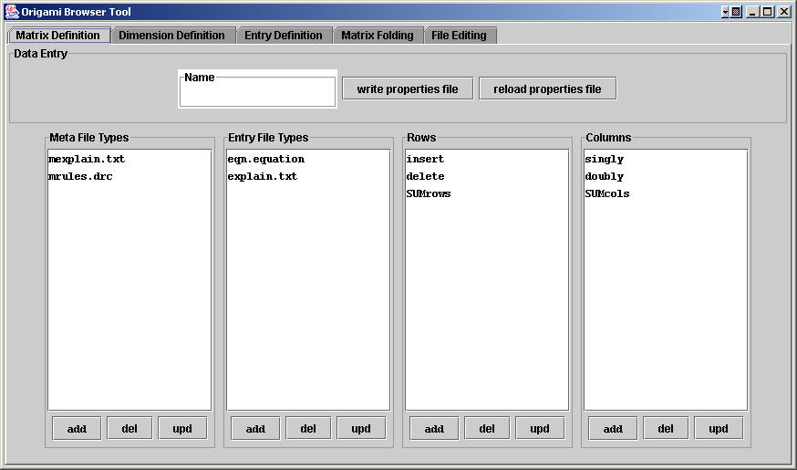
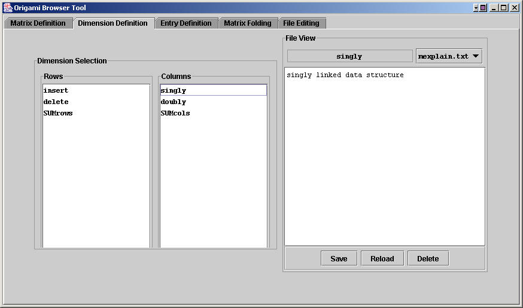
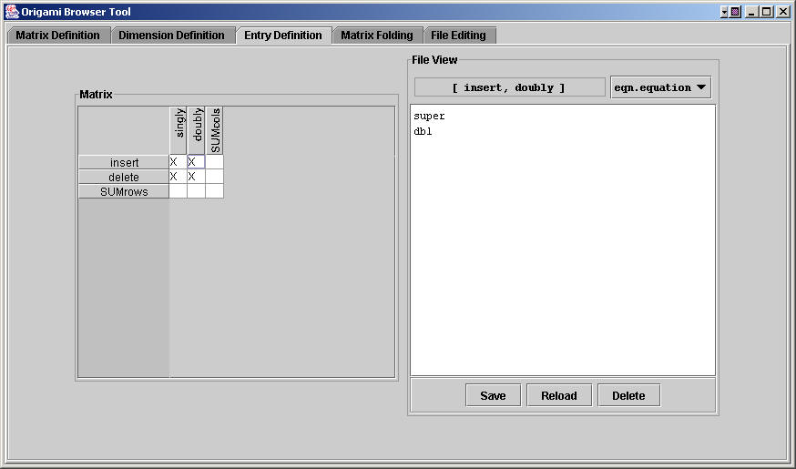
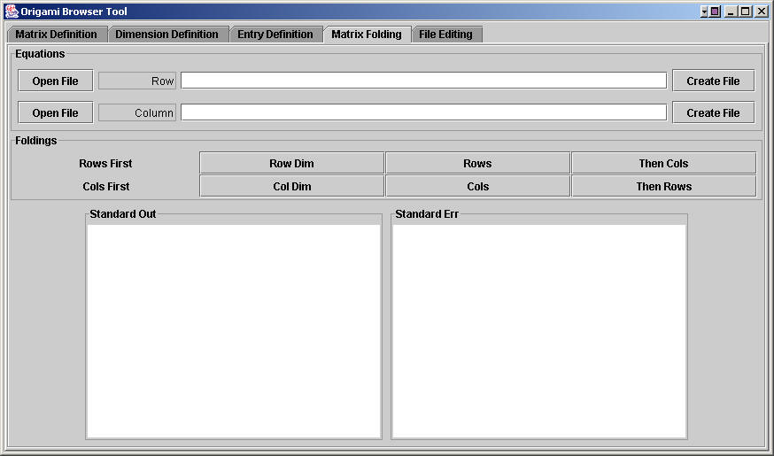
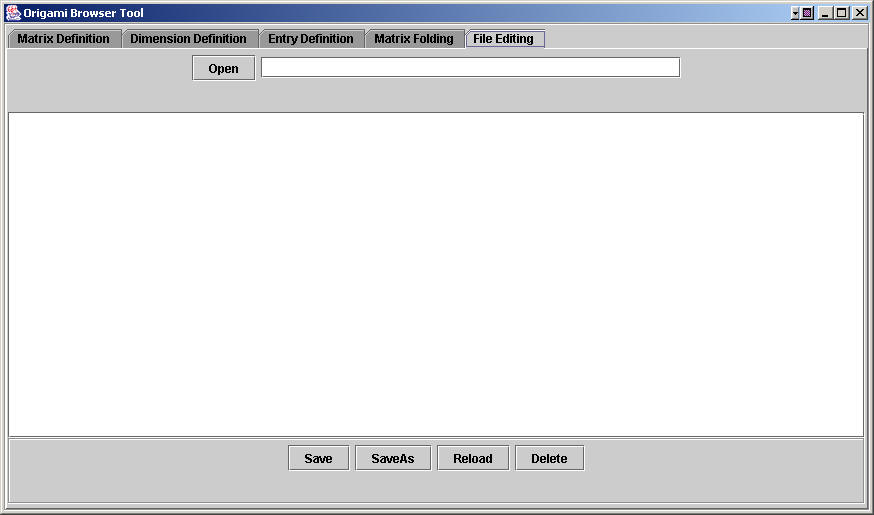

|
|
The Obe Tool |
Note: with the advent of .equations (plural!) files, the encoding of Origami matrices has changed. As a consequence, the Obe tool, as currently described is no longer be supported. Eventually, a new version of Obe, one that reads and writes .equations files, will be substituted.
Creating, viewing, and maintaining an Origami matrix is very unpleasant. obe (short for Origami browser) is a tool that allows you to define, view, and edit an Origami matrix. Its command line invocation is:
> obe <path-to-origami-directory>
No argument needs to be given if obe is run in the Origami directory. The following sections define how obe is used:
Defining an origami.properties file |
An origami matrix is a 2-dimensional array of AHEAD features. (More generally, it is a n-dimensional array, but obe can only deal with 2-D matrices). When obe runs, it looks in the origami directory for an origami.properties file. This file contains the definitions of the units for each dimension and the file types that can appear in each entry of the array. An origami.properties file has the form:
# origami.properties file has 4 properties; metaFileTypes is optional # rowNames : list of row names separated by blanks # colNames : list of column names separated by blanks # fileTypes: list of files that can appear in an origami directory # metaFileTypes: list of files (beyond mexplain.txt, mrules.drc) that # define row/column metadata rowNames=insert delete fileTypes=eqn.equation explain.txt colNames=singly doubly
As noted above, you must define up to 4 properties, where the first three are mandatory:
You can define this property file by hand, or you can use obe. Using obe, the Data Entry panel is used to enter a name. By clicking on the add button in the appropriate column, will add the name to that column. Once a column has been selected, each carriage return that is typed when entering a name will add that name to that column. In this way, a column of names can be entered quickly. Use the upd button to change the name of a selected entry; use del to delete a selected entry.
Notice that in the Rows and Columns list, there are SUMrows and SUMcols entries. These are special obe entries that allow you to view the meta files of computed rows and columns. (The only interesting computed meta data are design rules, if in fact design rules per each row or column unit are defined).
When you're done, make sure to save this definition by clicking on the write properties file button. If you need to reload the last saved version of the properties file, click reload properties file. Now proceed to the Dimension Definition tab.

Defining and Viewing Metadata for each Dimension |
For each metafile (defined by in the previous tab), you can define its contents. Click on the desired row or column unit, and dial in the file type in the combo box on the right, and the contents of the file is displayed in the text area. (The contents of the mexplain.txt for the singly column is shown below). You can save, reload, or delete a file by clicking on the appropriate button.
Normally, you want to define design rules for composing each dimension. Once you have finished entering this information (all of which is optional), proceed to the Entry Definition tab.

Defining and Viewing Data for each Matrix Entry |
This is the most useful tab of obe. It allows you to select a matrix entry, and view any of the files that have been defined for that entry. Just click the entry of the matrix on the left, dial the file type in on the right. You can edit, save, reload, and delete this file. Note an "X" in a matrix entry denotes that a file of the designated type is defined for that entry. (Deleting this file will remove the "X").

Folding a Matrix |
obe can be used to fold a matrix. First, enter an equation file for both the row and column. The Open... button provides a file chooser. If you don't have an equation file, you can type the equation in the text field and push Create File. It will store the equation in Row.equation or Column.equation (depending which Create File button you push).
Next, you can compose individual dimensions by the Row Dim or Col Dim buttons. Basically, models have been created for each dimension, and composing them will compose their metadata files. (If design rules are specified, then you can verify the correctness of the equation for each dimension).
To fold the matrix by rows, click the Rows button. This will create a model/directory SUMrows, whose contents you can view via the Entry Definition tab. To fold this result by columns, click the Then Cols button. This will create a model/directory Both, whose contents you can view in the (SUMrows, SUMcols) element of the matrix. Note: clicking Rows followed by Then Cols is important, as the other way around won't work.
To fold the matrix by columns, click the Cols button. This will create a model/directory SUMcols, whose contents you can view via the Entry Definition tab. To fold this result by columns, click the Then Rows button. This will create a model/directory Both, whose contents you can view in the (SUMrows, SUMcols) element of the matrix. Note that composing by columns and then rows yields an equivalent (although not identical) result to composing by rows then columns. Note: clicking Cols followed by Then Rows is important, as the other way around won't work.
During each composition, the output of composer is shown in the Standard Out and Standard Err windows below.

Editing Files |
The File Editing tab is for editing arbitrary text files, and should be useful for defining and viewing equation files on the fly. Files to be opened are selected via a file chooser when clicking the Open button. The absolute path of the file is displayed; this name is used as the identifier of the file that is to be saved, saved as, reloaded, or deleted (via the buttons at the bottom of the panel).

Copyright © Software Systems Generator Research Group.
All rights reserved.
Revised: January 25, 2006.